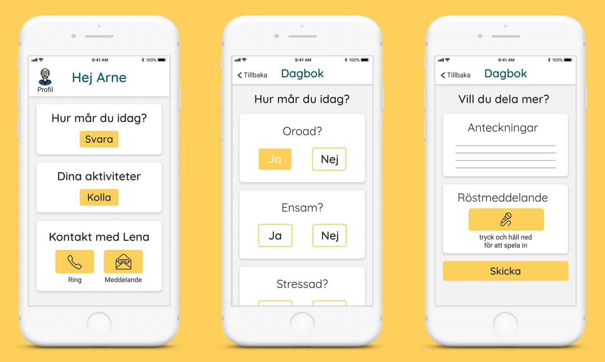

Relative & Patient Healthcare
Redesign of a Service for Innovation Skåne and Perstorp Municipality

Introduction
This project was presented by Innovation Skåne, an organization that deals with societal challenges with innovative solutions. The aim of this project was to develop a design
proposition to support the communication between relatives of patients enrolled in the municipal health care program (Region Skåne), as well as the Perstorp municipality
itself.
The municipal health care program offers
support for patients that are over the age of 75,
typically suffering from cognitive diseases such as dementia.
This project focuses
on Perstorp, a municipality with 7,000 residents
in the northern region of Skåne, Sweden and is undertaken in collaboration between
Malmö University and Innovation Skåne.
Caretaking relatives are defined in the framework
of this project as stakeholders that care for a close family member more than once per week and
typically live with that person in the same household. In our age group, the caretaking relative
is hence often times the partner. Field research
revealed that in this focus group, cognitive diseases such as dementia and depression are most
common, and therefore will be focused on in this
project.
In order to identify new service design opportunities for our focus group, insights into the
ecosystem that surround the caretaking relative
including the municipality, the home care service
and the relative support center, are gathered
through interviews and a co-design workshop,
as well as desk research. The summary of
the insights is used to propose a redesigned digital
service design solution.
Read More
Research Phase
Background Research
The background research provided a valuable starting
point to gather insights into personal care situations of relatives in the small municipality of
Perstorp. It appears also from research that when
caretaking of a family member works successfully and the relative is supported in the best way
possible, it enhances and increases quality of life
for both the patient and the relative.
Currently, 1,3 million people help and support
a close family member regularly in Sweden
and thereby fall under the category of “relative
caretaker”. The majority are part of the working
population and their work as caretakers saves
the Swedish society 177 billion Swedish kronor
every year (NKA, 2016).
Sweden introduced the individualized care
system in 2009, which is currently in place and
assigned the municipalities the obligation and
autonomy to support relatives in caretaking
of family members (Riksrevisionen, 2017). The
criteria for such support are individualisation,
flexibility and quality. The government authorized
Socialstyrelsen, the social ministry, to guide the
municipalities in the implementation and founded a national competence center for capacity
building (NKA, 2016).
However, the Swedish National Audit Office that
is tasked to analyze the impact of national policies, proclaims that the state is not able to address the individual needs of relative caretakers
in a flexible way. There are large differences within as well as between municipalities in terms of
support offered and municipalities have organized and financed their relative support differently
and municipalities have not received enough
guidance on how to support relatives (Riksrevisionen, 2017) and reporting and documentation
of municipalities has been weak. The needs of
relatives have not been fully met, which include
both the trust that the partner or family member
receives good care and treatment but also to receive individual and flexible support. Care-taking
by a relative is voluntary in Sweden, since the
state offers an alternative through the social care
services. However, as the Swedish National Audit
Office’s assessment found through interviews is
that many take on more responsibility than they
actually want to due to shortcomings in existing
health and social care services. Worries about
the health and social care for the family member is a major factor for the care-taking person‘s
needs. This includes trust in the housing situation, home care, treatment and having educated
staff with the right expertise. Many relatives feel
that one of the heaviest burdens they have to
bear is the coordinating role they often have to
take on board for tasks that would otherwise not
be taken care of. The carer’s need to be recognised and receive information and knowledge is
rarely met in contacts with health and social care
services (Riksrevisionen, 2017).
Socialstyrelsen, the Swedish National Audit Office as well as the National Competence Center
for Relatives found that the best way to support
relatives is by providing the close family member
the best care possible. In addition, relatives need
to know where and which kind of help they can
get, how they should apply and which rights they
have including support mechanisms such as financial benefits, short term care or adaptation of
the home to the new needs of the family member. Also, relatives wish to have a better collaboration between different caretakers in the system
so they do not need to coordinate themselves.
In addition, relatives seek to get support for
themselves too, in form of knowledge and skills
around how to take care of the family member but also for oneself. Information about the
importance of relatives that take care of a family
member needs to be disseminated through the
entire health organization.
This includes information on how to support
relative caretakers best with information and a
personalized approach. Similarly, the Swedish
National Audit Office interviewees felt that they
have had to fight to get the services that their
family member requires from the municipalities
and that they are at a disadvantage in relation to
the municipalities when it comes to knowledge
about which service/s their family member is
entitled to.
Research at Lunds University showed, that relatives taking care of someone with dementia or
depression have the highest burden when taking
care of that person at home. However, research
also revealed that relatives that do care for their
family member at home without experiencing
high stress have in fact a higher life quality and
health then when they do not provide care at
home (Wendel, Anna-Mi, 2015)
Read More
Existing Digital Offers for Relative Support
The desk research also covered existing digital solutions in this field. The only existing digital solution was "En bra plats", a website solely made for the support of relatives to provide
information and an anonymous place to meet
others in the same situation. The service needs
to be purchased by the municipality and offers
somehting called “Dementslotsen” whcih is essentially
a GPS for the relative of someone with cognitive
disorders.
"En bra plats" consists of 16 steps and it works as
hub for stage-specific information to inform the
relative what will happen at a specific stage in
your loved ones mental decline. For instance one
step could tell the relative that it may be time to
start looking into having shared care, start looking at which homes is best suited, how to/what
kind of help you could get from the municipality,
what is common for a sick person to be doing at
this time or even how to apply for financial aid.
It’s purpose is to help guide the relative through
the massive amount of pitfalls that they could
fall into whilst taking care of someone with a
cognitive disorder. The platform also offers a
feature where they match a relative with someone else who is in the same position to exchange
experiences as well as share best practice. En
bra plats is also used by the caretakers, doctors,
nurses and the people who work in the elderly homes for instance. En bra plats works as a
way for them to get information about specific
cases, they could get into contact with a nurse
or a doctor from a larger municipality which has
had special cases that may not be as common
in small ones and see how they handled it. So
En bra plats works also as a platform between
relatives and professionals.
Read More
Field Research
Approach
The team looked at the municipality of Perstorp,
analysing existing services that are in place for
the relatives. We found multiple organisations
that offer support for relatives and were provided
with an initial contact for a decision maker within
the municipality administration. We started to set
up meetings the municipality first and later with
external stakeholders from outside the municipality.
The interviews took place in Perstorp, Lund, Malmö and also on the phone. After every interview,
we analyzed the notes to retrieve main insights
out of the interviews.
We started the first Stakeholder Map before and the first User Journey
map after the first interview. Over time we updated these maps and added an empathy map and
persona.
All of the data we collected from interviews
and desk research were later compressed into
problems, which we presented at the co-design
workshop that we held with various participants
in the municipality of Perstorp. At the co-design
workshop we narrowed these problems down
to define focus areas and problem opportunities
with the help of both relatives of patients and
staff of the municipality.
Read More